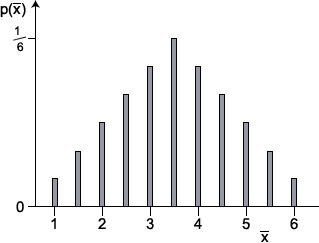

Mean of random sample from a uniform distribution
The general results about the distribution of means of random samples can be applied to the uniform distribution. If \(\overline{X}\) is the mean of a random sample of \(n\) values from a \(\UniformDistn(a, b)\) distribution,
\[\begin{aligned} E[\overline{X}] & \;=\; E[X] \;=\; \frac{a+b} 2 \\[0.3em] \Var(\overline{X}) & \;=\; \frac {\Var(X)} n \;=\; \frac{ (b - a + 1)^2 - 1} {12n} \end{aligned} \]Example: Rolling a six-sided die twice
When a standard six-sided die is rolled, the number has a \(\UniformDistn(1, 6)\) distribution with mean and variance
\[\begin{aligned} E[X] & = \frac{1+6} 2 = 3.5 \\ \Var(X) & = \frac{ (6 - 1 + 1)^2 - 1} {12} = \frac {35} {12} = 2.917 \end{aligned} \]When the die is rolled twice independently, we have a random sample of size n = 2 from this distribution. The table below shows all 36 possible combinations of values for the two dice, and the resulting total of the two values.
| Value for first roll | |||||||
|---|---|---|---|---|---|---|---|
| 1 | 2 | 3 | 4 | 5 | 6 | ||
| Value for second roll |
1 | 2 | 3 | 4 | 5 | 6 | 7 |
| 2 | 3 | 4 | 5 | 6 | 7 | 8 | |
| 3 | 4 | 5 | 6 | 7 | 8 | 9 | |
| 4 | 5 | 6 | 7 | 8 | 9 | 10 | |
| 5 | 6 | 7 | 8 | 9 | 10 | 11 | |
| 6 | 7 | 8 | 9 | 10 | 11 | 12 | |
Since these 36 outcomes are equally likely, they all have probability \(\frac 1 {36}\).
Since the outcomes are mutually exclusive, we can add up their probabilities to get the following distribution for the total of the two rolls:
| Total of two rolls | ||||||||||||
|---|---|---|---|---|---|---|---|---|---|---|---|---|
| x | 1 | 2 | 3 | 4 | 5 | 6 | 7 | 8 | 9 | 10 | 11 | 12 |
| \(p(x)\) | 0 | \(\frac 1 {36} \) | \(\frac 2 {36} \) | \(\frac 3 {36} \) | \(\frac 4 {36} \) | \(\frac 5 {36} \) | \(\frac 6 {36} \) | \(\frac 5 {36} \) | \(\frac 4 {36} \) | \(\frac 3 {36} \) | \(\frac 2 {36} \) | \(\frac 1 {36} \) |
The distribution of the mean of this sample of n = 2 values has the same probabilities,
| Mean of two rolls | ||||||||||||
|---|---|---|---|---|---|---|---|---|---|---|---|---|
| x | 0.5 | 1 | 1.5 | 2 | 2.5 | 3 | 3.5 | 4 | 4.5 | 5 | 5.5 | 6 |
| \(p(x)\) | 0 | \(\frac 1 {36} \) | \(\frac 2 {36} \) | \(\frac 3 {36} \) | \(\frac 4 {36} \) | \(\frac 5 {36} \) | \(\frac 6 {36} \) | \(\frac 5 {36} \) | \(\frac 4 {36} \) | \(\frac 3 {36} \) | \(\frac 2 {36} \) | \(\frac 1 {36} \) |
Its bar chart is shown below.

From the table of probabilities, we can evaluate the mean and variance of this distribution,
\[ E[\overline{X}] = \sum_{\text{all } x} {x \times p(x)} = 3.5 \\ E[\overline{X}^2] = \sum_{\text{all } x} {x^2 \times p(x)} = 13.708333 \\ \Var(\overline{X}) = E[\overline{X}^2] - \left(E[\overline{X}]\right)^2 = 1.45833 \]This agrees with the general formulae for the mean and variance of sample means:
\[ E[\overline{X}] = E[X] = 3.5 \\ \Var(\overline{X}) = \frac {\Var(X)} 2 = 1.45833 \]Rolling a six-sided die three or more times
When a standard six-sided die is independently rolled \(n\) times, the mean of the values has a distribution whose mean and variance are
\[ E[\overline{X}] = E[X] = 3.5 \\[0.4em] \Var(\overline{X}) = \frac {\Var(X)} n = \frac {2.917} n \]Although the probabilities are harder to calculate when \(n \gt 2\), the following diagram shows the distribution.
Drag the slider to increase the sample size or, equivalently, to increase the number of dice that are rolled.
Observe that:
The limiting normal distribution should be expected from the Central Limit Theorem. It states that the distributions of the sum and mean of a random sample from any distribution are approximately normal if the sample size is large enough.